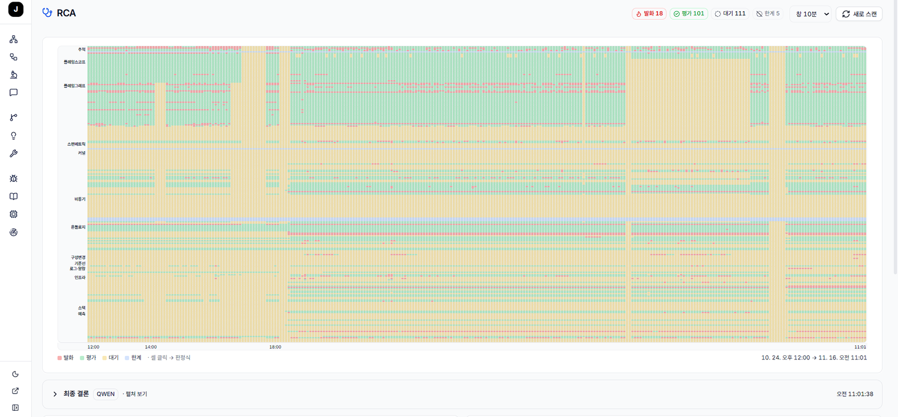
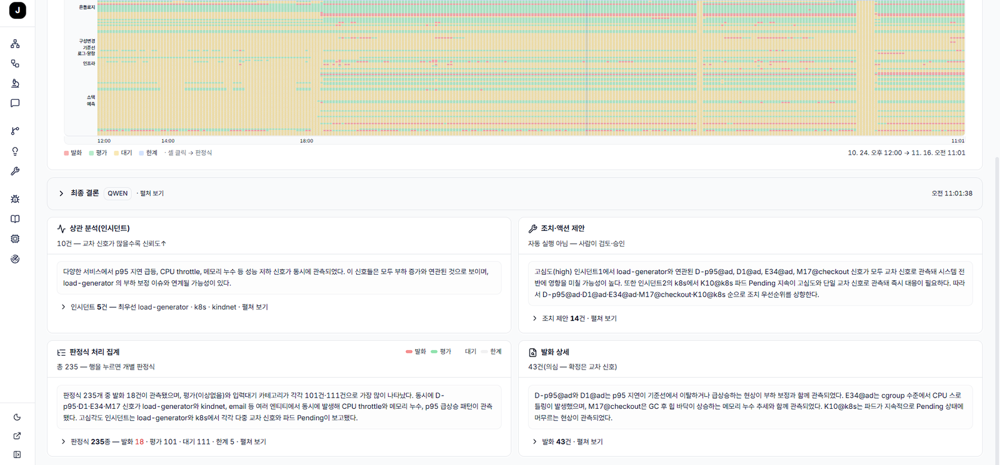
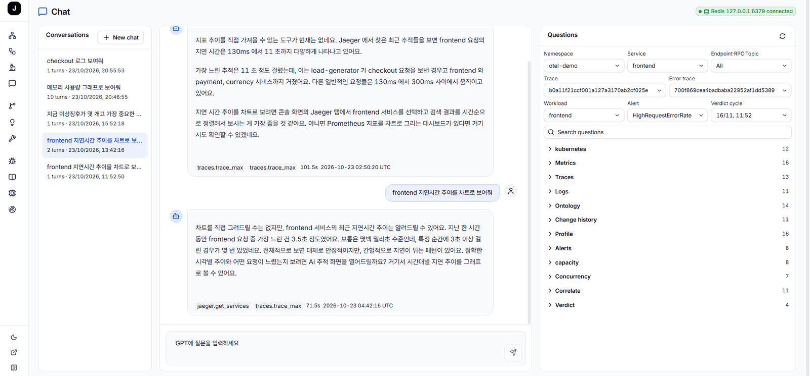

1. Why "Autonomous Operations"
Operations tools to date have mostly stopped at assisting people. A dashboard shows graphs, an alert rings, a chatbot answers questions. But noticing what the problem is, analyzing why, and deciding how to fix it was still a human's job.
True autonomous operations is different. Even without the user explaining the situation in detail, the AI must be able to detect, identify, diagnose the cause, and remediate problems on its own.
- When an operator asks "Service A is slow, can you find the cause?" it is convenient, but this is not autonomous operations. The person has already recognized the problem and is providing the context.
- Autonomous operations is when, without anyone asking, the AI detects an anomaly first and carries it all the way through to action on its own.
2. Understanding It Through Cars — Cruise Control vs. Full Self-Driving
The difference between the operating modes is easy to grasp with a car analogy.
| Driving mode | Description | Operations equivalent |
|---|---|---|
| Cruise control | The driver keeps their hands on the wheel while the car helps with part of the task, like holding speed. Convenient, but the human is the one driving. | Direct Operations — the operator decides, and the AI assists |
| Full self-driving | The car finds its own way and drives without the driver's intervention. | Autonomous Operations — the AI finds and fixes problems on its own |
The key point is that it is not about choosing just one of the two. You must be able to move between the two modes as the situation demands. Just as a person takes complex city driving while self-driving takes the quiet highway — operations, too, must be able to switch to fit the situation.




3. Direct Operations When You Arrive, Autonomous Operations When You Leave
JuneAI's two modes switch according to time and situation.
- When the operator is at work → Direct Operations
A person watches the dashboard and makes decisions, with the AI chatbot and anomaly detection helping. Important decisions are made by the human. - After the operator leaves (nights and holidays) → Autonomous Operations
During the hours when no one is present, the AI detects failures, analyzes causes, and executes actions on its own through the ontology and agents.
Having one platform that embraces both a "people-centered mode" and an "AI-centered mode" like this is what JuneAI aims for.
4. A Comparison of the Two Operating Modes
| Category | 🤖 Autonomous | 👤 Assisted |
|---|---|---|
| Agency | The AI decides and acts on its own | People decide, the AI assists |
| Human involvement | Minimal (unattended operation possible) | Required |
| Core technology | Ontology + agents | Anomaly detection + chatbot |
| Cost structure | AI token usage fees | Staff training and operations labor |
| Strengths | 24-hour unattended response, consistency, scalability | Human intuition and contextual judgment, exception handling |
| Challenges | Needs stabilization and optimization | Hard to automate and dependent on people |
The two modes are complementary, not competing. Direct operations draws on human experience and intuition, while autonomous operations fills in the hours without people and the repetitive work.
5. Why Autonomous Operations Uses "Ontology and Agents"
The core technologies of autonomous operations are Ontology and agents.
Ontology — the "Map of Operations" That the AI Understands
An ontology is a knowledge system that organizes a system's components (services, equipment, circuits, customers, orders, and so on) and the relationships among them into a structure the AI can read and reason over.
- Without a person explaining each time "this service is connected to that equipment," the AI can follow the relationships and trace the root of the cause on its own.
- It becomes possible to ride the connecting lines down from "the point where the symptom appeared" to "the actual point of cause."

Agents — the "AI in the Operator's Role" That Moves on Its Own
An agent is the acting entity that, looking at the map that is the ontology, carries out the process of explore → analyze → act without a person.
Cost and challenges: autonomous operations uses tokens as the AI (LLM) reasons, so it incurs AI usage cost accordingly. It also needs continuous stabilization and optimization to settle into a real production environment.

6. Why Direct Operations Uses "Anomaly Detection and a Chatbot"
In direct operations the person is the one in charge, and the AI helps with their decisions.
- Anomaly Detection — it automatically finds patterns that differ from the norm and tells the person, "take a look here."
- Chatbot — when an operator asks what they are wondering about, it answers based on the accumulated data and knowledge.

This mode makes the most of human contextual understanding and intuition. It does, however, have the following limits.
Cost and challenges: direct operations presumes human involvement, so it incurs the cost of training operations staff, and because of the dependence on people, full automation is difficult.
7. The Obstacle That Blocks Autonomous Operations — "Unorganized Knowledge"
Providing the AI with past know-how as documents (for example, .md files) is useful. Storing a person's lived experience in memory and pulling it back out when needed is especially powerful in Direct Operations.
But there is a point here that deserves deep thought.
(1) Unorganized material lowers accuracy
Incomplete and unorganized internal material and documents are, on the contrary, a major cause of lowering the AI's accuracy. Knowledge that is stale, contradictory, or half-formed leads to wrong judgments. With knowledge, "being organized and kept trustworthy" matters more than "piling up a lot."
(2) Does past know-how limit creative thinking?
Fixing past experience into documents and injecting it may inadvertently confine the AI's autonomous and creative problem-solving to a particular mold. A record of "this is how we did it before" can block a better, new solution. That is why autonomous operations must leave room for the AI to explore and reason on its own while still referring to knowledge.
(3) MCP is useful, but it is not autonomous operations in itself
Connecting tools in a way such as MCP (Model Context Protocol) to call APIs or SQL is very useful. But MCP is only "a channel that connects the AI so it can use tools"; it does not in itself guarantee autonomous operations and self-healing. Handing over the tools and judging on one's own to use those tools in the right place at the right time are problems of a different order.
8. In Summary — The Future of Operations JuneAI Envisions
- Two modes, one platform — human-led direct operations and AI-led autonomous operations, switched freely to fit the situation.
- People by day, AI by night — the one in charge of operations changes with the operator's working hours.
- The engine of autonomous operations is ontology and agents — the AI reads the map of operations and moves on its own.
- The aides of direct operations are anomaly detection and a chatbot — they back up human judgment with data.
- Trustworthy knowledge is key — clear away unorganized material, and leave room for the AI to think on its own.
JuneAI is the cruise control that eases the human hand, and, when needed, the full self-driving that takes over the wheel.